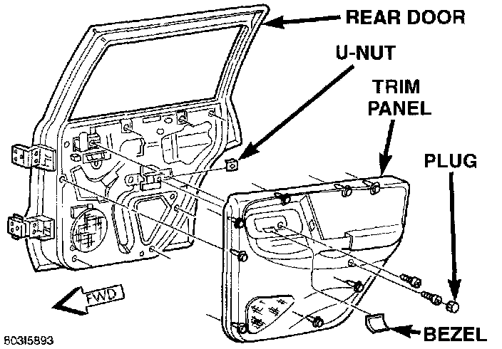
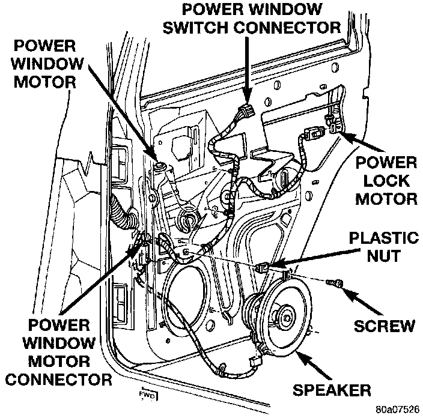

Rear Door
1. Disconnect and isolate the battery negative cable.2. Remove the bezel near the inside door latch release handle by inserting a straight-bladed screw-driver in the notched end and prying gently upwards.
Rear Door Trim Panel Remove/Install:

3. Remove the door trim panel mounting screw located in the bezel opening near the inside door latch release handle.
4. Remove the trim cap and screw near the rear of the door armrest.
5. Using a wide flat-bladed tool such as a trim stick, pry the trim panel away from the door around the perimeter and remove the trim panel.
NOTE: To aid in the removal of the trim panel, start at the bottom of the panel.
6. Unplug the wire harness connector from the power window switch.
Rear Door Speaker Remove/Install:

7. Remove the three screws that secure the speaker to the lower front corner of the inner door panel.
8. Pull the speaker away from the door far enough to unplug the speaker wire harness connector.
9. Remove the speaker from the door.
10. Reverse the removal procedures to install. Tighten the hardware as follows:
- Speaker mounting screws - 1.1 N.m (10 in. lbs.)
- Trim panel mounting screws - 1.3 N.m (12 in. lbs.).